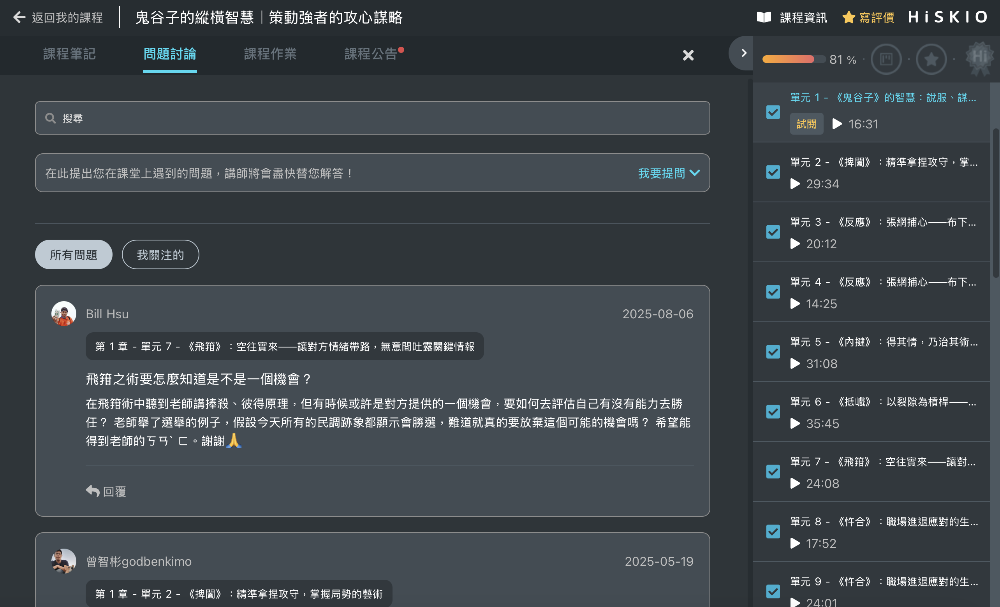

學習過程中如果有疑問，可以透過以下兩種方式尋求協助：
問題討論區
每堂課程都有獨立的問題討論區，可以與老師交流、解決學習上遇到的問題；也能與其他學員交流心得。
進入問題討論的方式
- 進入學習頁面
- 點選下方「問題討論」
- 在這裡選擇章節並提問，也可以瀏覽其他學員的提問互相交流

交流社團／群組
依照課程不同，講師可能會提供專屬的交流管道（如 Facebook 社團、LINE@、LINE 社群等），於學員完成課程購買時提供加入方式。
加入後可以更快速地獲得學習相關的協助與資訊，也能與同學互相交流。建議購買後留意通知，記得加入！
更新時間： 07/05/2026